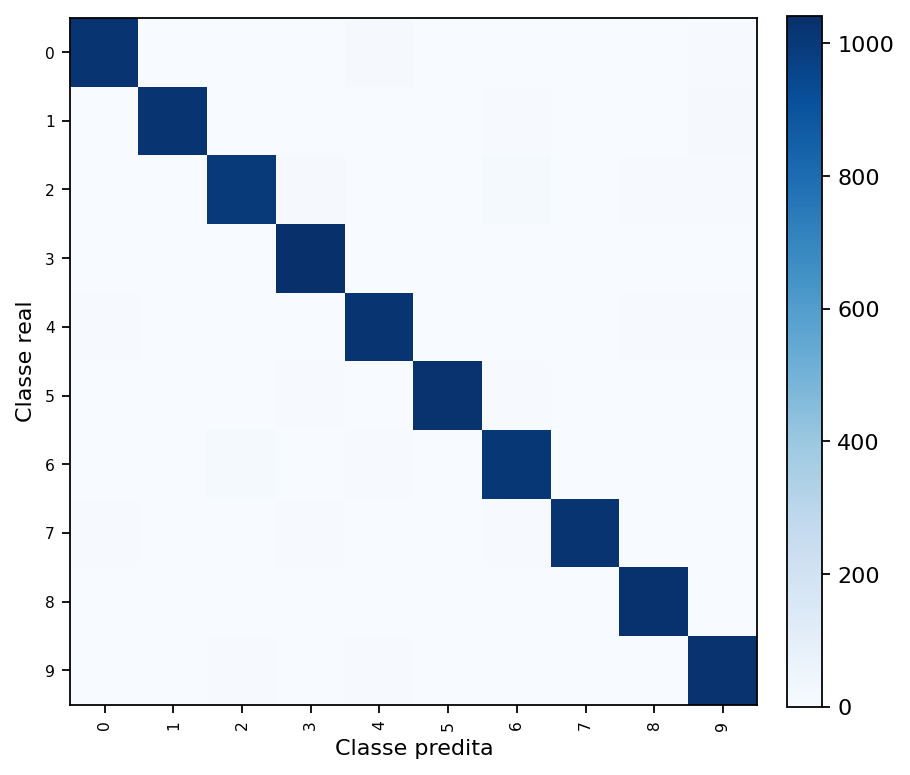
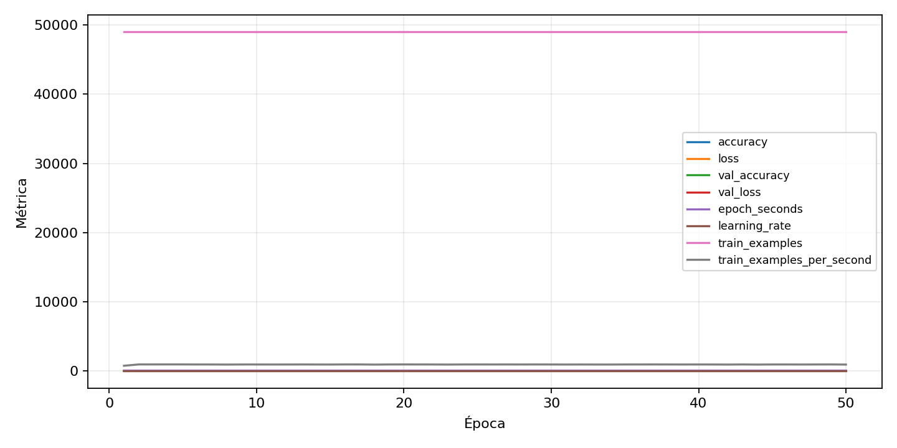

| n_samples | 10500 |
|---|---|
| loss | 0.13552695512771606 |
| accuracy | 0.9739047619047619 |
| balanced_accuracy | 0.9739047619047619 |
| macro_f1 | 0.9739023628897175 |


| Índice | Classe | Suporte | Precisão | Recall | F1 |
|---|---|---|---|---|---|
| 0 | 0 | 1050 | 0.9818007662835249 | 0.9761904761904762 | 0.9789875835721107 |
| 1 | 1 | 1050 | 0.9845261121856866 | 0.9695238095238096 | 0.9769673704414586 |
| 2 | 2 | 1050 | 0.9644230769230769 | 0.9552380952380952 | 0.9598086124401914 |
| 3 | 3 | 1050 | 0.9720149253731343 | 0.9923809523809524 | 0.9820923656927426 |
| 4 | 4 | 1050 | 0.9686311787072244 | 0.9704761904761905 | 0.9695528068506185 |
| 5 | 5 | 1050 | 0.9855907780979827 | 0.9771428571428571 | 0.9813486370157818 |
| 6 | 6 | 1050 | 0.959280303030303 | 0.9647619047619047 | 0.9620132953466287 |
| 7 | 7 | 1050 | 0.9855072463768116 | 0.9714285714285714 | 0.9784172661870504 |
| 8 | 8 | 1050 | 0.9708097928436912 | 0.981904761904762 | 0.9763257575757575 |
| 9 | 9 | 1050 | 0.9671052631578947 | 0.98 | 0.9735099337748344 |
{"adapter":"kmnist","balance_mode":"all_raw","class_names":["0","1","2","3","4","5","6","7","8","9"],"dataset":"kmnist","dataset_options":{},"dataset_root":"/home/msduda/datasets-tcc/kmnist","native_channels":1,"normalization":"unit_interval","num_classes":10,"protocol":{"checkpoint_monitor":"val_macro_f1","dtype_policy":"mixed_float16","early_stopping":{"patience":50,"restore_best_weights":true},"evaluation_augmentation":false,"input_channels":"native","optimizer":"Adam","pretrained_weights":false,"reduce_lr_on_plateau":{"factor":0.3,"min_lr":1e-07,"patience":50},"resize":"proportional_padding","test_time_augmentation":false,"training_from_scratch":true},"seed":42,"source_fingerprint":"8928d478d8d23938a73b4f4a92c407bf3d74beff1e0e67e3644d6ecdc30cf828","source_manifest":{"class_names":["0","1","2","3","4","5","6","7","8","9"],"joined_samples":70000,"metadata":{"layout":"kmnist-component-npz"},"name":"kmnist","native_channels":1,"source_path":"/home/msduda/datasets-tcc/kmnist","splits":{"test":10000,"train":60000},"target_size":64},"target_size":64,"test_fraction":0.15,"train_fraction":0.7,"training":{"augmentation":{"brightness_delta":0.0,"contrast_lower":1.0,"contrast_upper":1.0,"cutout_max_frac":0.0,"cutout_prob":0.0,"flip_lr":false,"noise_std":0.0,"translate_frac":0.0,"zoom_max":1.0,"zoom_min":1.0},"batch_size":464,"default_image_size":64,"dtype_policy":"mixed_float16","early_stopping_patience":50,"extra_fraction":0.0,"image_size_overrides":{"gtsrb":128},"keras_verbose":1,"learning_rate":0.0003,"max_epochs":50,"preprocess_cache_max_mib":0,"reduce_lr_factor":0.3,"reduce_lr_min_lr":1e-07,"reduce_lr_patience":50,"shuffle_buffer_max_mib":0},"validation_fraction":0.15}
{"epochs_completed":50,"epochs_recorded":50,"evaluation_seconds":18.061501415002567,"fit_seconds_current_attempt":3087.8185418990033,"max_epoch_seconds":64.0586132860044,"max_epochs":50,"mean_epoch_seconds":52.03739304140036,"mean_train_examples_per_second":942.5022177370251,"median_train_examples_per_second":946.6662415058686,"min_epoch_seconds":51.22795005400258,"selected_checkpoint":"/mnt/e/tcc-benchmark/outputs/kmnist-alldata-noaug-batch-sweep-2026-08-06/batch-464/kmnist/runs/kmnist__unit_interval__all_raw__seed-42/checkpoints/best.keras","total_seconds":2601.8696520700178,"training_seconds":2601.8696520700178,"wall_seconds_current_attempt":3109.5407171379993}
{"elapsed_seconds":3109.589610502997,"event_counts":{"data_preparation_end":1,"data_preparation_start":1,"epoch_end":50,"evaluation_end":1,"evaluation_start":1,"fit_end":1,"fit_start":1,"periodic":613,"run_completed":1,"train_start":1},"generated_at":"2026-08-08T08:49:18.425+00:00","gpu_backend":"pynvml","interval_seconds":5.0,"metrics":{"cpu_percent":{"count":671,"max":16.7,"mean":13.064679582712369,"min":0.0,"p50":13.4,"p95":16.25},"disk_data_free_bytes":{"count":671,"max":998270861312.0,"mean":998270797735.4873,"min":998270787584.0,"p50":998270795776.0,"p95":998270799872.0},"disk_data_percent":{"count":671,"max":2.7,"mean":2.7,"min":2.7,"p50":2.7,"p95":2.7},"disk_data_total_bytes":{"count":671,"max":1081101176832.0,"mean":1081101176832.0,"min":1081101176832.0,"p50":1081101176832.0,"p95":1081101176832.0},"disk_data_used_bytes":{"count":671,"max":27838033920.0,"mean":27838023768.51267,"min":27837960192.0,"p50":27838025728.0,"p95":27838025728.0},"disk_output_free_bytes":{"count":671,"max":207061073920.0,"mean":207048249038.7839,"min":207047204864.0,"p50":207048056832.0,"p95":207048306688.0},"disk_output_percent":{"count":671,"max":79.3,"mean":79.3,"min":79.3,"p50":79.3,"p95":79.3},"disk_output_total_bytes":{"count":671,"max":1000186310656.0,"mean":1000186310656.0,"min":1000186310656.0,"p50":1000186310656.0,"p95":1000186310656.0},"disk_output_used_bytes":{"count":671,"max":793139105792.0,"mean":793138061617.2161,"min":793125236736.0,"p50":793138253824.0,"p95":793139019776.0},"elapsed_seconds":{"count":671,"max":3109.533753,"mean":1557.618387500745,"min":0.027639,"p50":1555.537932,"p95":2968.3595715},"gpu_count":{"count":671,"max":1.0,"mean":1.0,"min":1.0,"p50":1.0,"p95":1.0},"gpu_memory_percent":{"count":671,"max":52.156639099121094,"mean":51.74536712123456,"min":38.040781021118164,"p50":51.96819305419922,"p95":51.987648010253906},"gpu_memory_total_bytes":{"count":671,"max":8589934592.0,"mean":8589934592.0,"min":8589934592.0,"p50":8589934592.0,"p95":8589934592.0},"gpu_memory_used_bytes":{"count":671,"max":4480221184.0,"mean":4444893190.1043215,"min":3267678208.0,"p50":4464033792.0,"p95":4465704960.0},"gpu_temperature_c":{"count":671,"max":51.0,"mean":41.89716840536513,"min":38.0,"p50":41.0,"p95":49.0},"gpu_utilization_percent":{"count":671,"max":100.0,"mean":20.15946348733234,"min":1.0,"p50":10.0,"p95":58.5},"process_cpu_percent":{"count":671,"max":213.5,"mean":171.38733233979136,"min":0.0,"p50":178.1,"p95":210.6},"process_read_bytes":{"count":671,"max":10067968.0,"mean":10058408.631892698,"min":7933952.0,"p50":10067968.0,"p95":10067968.0},"process_rss_bytes":{"count":671,"max":4001267712.0,"mean":3691549660.900149,"min":1029599232.0,"p50":3786252288.0,"p95":3811176448.0},"process_vms_bytes":{"count":671,"max":50005061632.0,"mean":49617920891.230995,"min":39580270592.0,"p50":49787047936.0,"p95":49869795328.0},"process_write_bytes":{"count":671,"max":1392640.0,"mean":1374583.4157973174,"min":4096.0,"p50":1392640.0,"p95":1392640.0},"ram_available_bytes":{"count":671,"max":15534317568.0,"mean":13035602121.442623,"min":12723126272.0,"p50":12940894208.0,"p95":13540352000.0},"ram_percent":{"count":671,"max":23.4,"mean":21.562891207153502,"min":6.5,"p50":22.1,"p95":22.3},"ram_total_bytes":{"count":671,"max":16619085824.0,"mean":16619085824.0,"min":16619085824.0,"p50":16619085824.0,"p95":16619085824.0},"ram_used_bytes":{"count":671,"max":3895959552.0,"mean":3583483702.557377,"min":1084768256.0,"p50":3678191616.0,"p95":3701624832.0}},"sample_count":671,"schema_version":1}